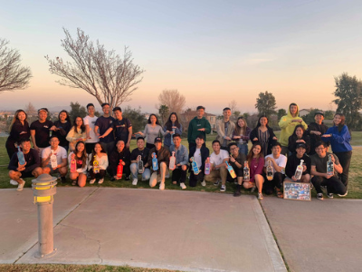

Charlie Tran
As a college undergraduate student, I've had numerous past work experiences that have aided me to become the responsible person that I am today. My past work as a receptionist for a nail salon has helped me gain useful, transferable skills such as communication, multi-tasking, taking initiative and solve constant, everyday problems. Throughout this job, I had to personally have the ability to communicate professionally with hundreds of clients and customers every day. The role of people management and customer service is very important to me in any working space or job. Also, the fast-paced/recurring duties of being a receptionist has made myself more adaptable to busy and active work environments. On the technical side of this position, I had to learn various Microsoft programs such as Excel, Outlook, and Word to keep track of a high trafficking database full of clients and schedules. Furthermore, my time as a club chairman at my local high school has also taught me incredible life skills for the betterment of myself. As a club chairman, I had to manage and oversee all of the clubs on campus. My main responsibilities included clearing off paperwork regarding each club’s budget plans and making sure that each club functions correctly. I also had to work closely with the principal and teachers to provide a safe and fun school event atmosphere. In addition to this, I had the pleasure to serve as my co-president for my mock trial club. As co-president, I maintained a leadership role as an attorney in the case and further lead us on to win 2 rounds. This role was stressful at times due to the sheer workload but the mock trial team managed to pull through and acquire new high school top records in awards. This role has taught me to be open-minded to everyone’s opinion on the case at hand with the whole team understanding each prosecution or defense’s side. Recently, I had the opportunity of being an intern for the largest cultural club on my college campus. This internship has additionally improved my leadership skills by taking the initiative on cultural events and help plan them out. The internship has further taught me the importance of socializing with potential members and taught me how to be professional and courteous in business emails as well. I learned so much about taking into account of a professional manner when speaking to potential sponsors for our events. Moreover, my time as a bubble tea barista at Ding Tea has made me more self-reliant on myself by creating a work schedule for myself, paying my own taxes, and purchasing my own groceries with my own hard earned money. As a barista I too had to do reception in some shift hours and was greatly successful at it due to my previous job as a receptionist. Overall, my past professional experiences in leadership roles and transferable skills from minimum wage jobs has aided in me becoming a better employer, leader, and most importantly, person.
Experience
Receptionist
• Communication with clients
• Multitasking
• Technical experience with Excel and Outlook
Intern
• Seek out potential business sponsors
• Set up cultural events
Education
University of California Riverside
Portfolio
